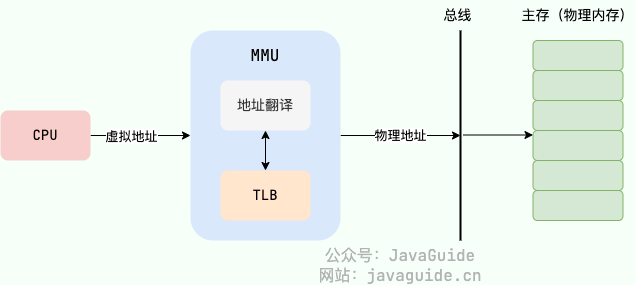
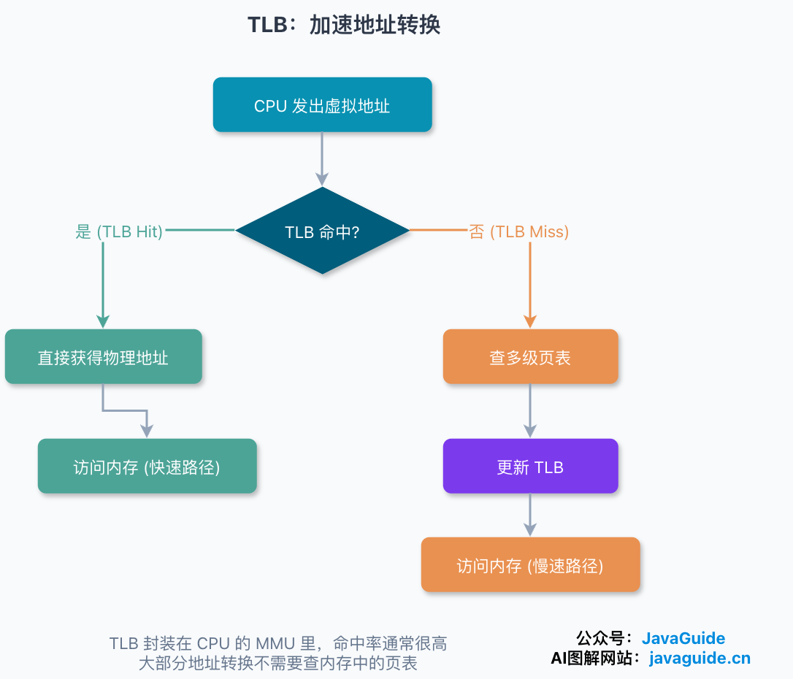

操作系统
相关链接：
一、操作系统基础
1.1 操作系统及其内核
操作系统（Operating System，简称 OS）是管理计算机硬件与软件资源的软件程序。
- 所有应用程序都通过操作系统来调用系统内存以及磁盘等硬件。
- 操作系统屏蔽了硬件层的复杂性。
- 操作系统的内核（Kernel）是操作系统的核心部分，它负责系统的内存管理，硬件设备的管理，文件系统的管理以及应用程序的管理。内核是连接应用程序和硬件的桥梁，决定着系统的性能和稳定性。
操作系统的内核（Kernel）和中央处理器（CPU，Central Processing Unit）的区别：
- 操作系统的内核（Kernel）属于操作系统层面，主要负责系统管理比如内存管理，它屏蔽了对硬件的操作。
- 而 CPU 属于硬件，主要提供运算，处理各种指令的能力。
下图清晰说明了应用程序、内核、CPU 这三者的关系。

1.2 操作系统的资源管理功能
操作系统有 6 大资源管理功能：
- 进程和线程的管理：进程的创建、撤销、阻塞、唤醒，进程间的通信等。
- 存储管理：内存的分配与回收、地址转换、进程隔离、页面回收，以及外存空间管理等。
- 文件管理：把底层存储块组织成文件和目录，负责文件读写、创建、删除、权限控制和崩溃恢复等。
- 设备管理：完成设备（输入输出设备和外部存储设备等）的请求或释放，以及设备启动等功能。
- 网络管理：操作系统负责管理计算机网络的使用。网络是计算机系统中连接不同计算机的方式，操作系统需要管理计算机网络的配置、连接、通信和安全等，以提供高效可靠的网络服务。
- 安全管理：用户的身份认证、访问控制、文件加密等，以防止非法用户对系统资源的访问和操作。
1.3 常见的操作系统
1.3.1 Windows
目前最流行的个人桌面操作系统，不做多的介绍。界面简单易操作，软件生态非常好。
1.3.2 Unix
Unix 是早期最具影响力的多用户、多任务操作系统之一，后来的 Linux、BSD 等类 Unix 系统都受到它的影响。传统商业 Unix 的市场份额已经明显下降，但 Unix 标准、认证系统及其设计思想仍在使用。
1.3.3 Linux
Linux 是一套免费使用、开源的类 Unix 操作系统。 Linux 存在着许多不同的发行版本，但它们都使用了 Linux 内核。
严格来讲，Linux 这个词本身只表示 Linux 内核，在 GNU/Linux 系统中，Linux 实际就是 Linux 内核，而该系统的其余部分主要是由 GNU 工程编写和提供的程序组成。单独的 Linux 内核并不能成为一个可以正常工作的操作系统。
很多人更倾向使用 "GNU/Linux" 一词来表达人们通常所说的 "Linux"。
1.3.4 Mac OS
苹果自家的操作系统，编程体验和 Linux 相当，但是界面、软件生态以及用户体验各方面都要比 Linux 操作系统更好。
1.4 用户态和内核态
1.4.1 什么是用户态和内核态？
操作系统将内存划分为用户空间和内核空间，CPU 也对应两种运行级别：
- 用户态（User Mode）：应用程序运行在此，权限较低，不能直接执行特权指令，也不能随意访问内核地址空间或操作硬件。应用读文件、收发网络数据时，需要通过系统调用请求内核服务。
- 内核态（Kernel Mode）：操作系统内核运行在此，权限较高，可以执行管理页表、中断、设备等特权操作。系统调用、中断或同步异常进入内核后，运行的是内核代码，不是把整个用户进程变成了“内核进程”。

1.4.2 为什么要有用户态和内核态？只有一个内核态不行么？
这样设计主要是为了安全和稳定。
- 限制特权操作：修改页表、控制中断、访问特定设备寄存器等操作会影响整个系统，只能由内核执行。
- 隔离故障和权限：如果应用都能以内核权限运行，一个越界写或恶意程序就可能破坏其他进程和内核数据，进程隔离也就失去了基础。
1.4.3 用户态和内核态是如何切换的？
让 CPU 从用户态进入内核态的事件主要有三类：
- 系统调用（Trap）：应用程序主动执行
syscall、ecall等指令，请求内核完成read()、send()等操作。它由当前指令触发，属于同步事件。 - 硬件中断（Interrupt）：由定时器、网卡、磁盘等外部硬件触发，与当前正在执行的指令没有直接关系，因此属于异步事件。
- 同步异常（Exception）：由当前指令触发，例如除零、非法指令或 Page Fault。异常不一定代表程序出错，懒分配、COW 和从文件调页也会触发可恢复的 Page Fault。
1.5 系统调用
1.5.1 什么是系统调用？
系统调用（System Call）是内核向用户程序提供的受控服务接口。应用不能直接操作磁盘、页表和网卡等受保护资源，需要通过系统调用让内核代为完成。

这些系统调用按功能大致可分为如下几类：
- 设备管理：完成设备（输入输出设备和外部存储设备等）的请求或释放，以及设备启动等功能。
- 文件管理：完成文件的读、写、创建及删除等功能。
- 进程管理：进程的创建、撤销、阻塞、唤醒，进程间的通信等功能。
- 内存管理：完成内存的分配、回收以及获取作业占用内存区大小及地址等功能。
- 网络通信：创建 Socket、建立连接、收发数据等。
1.5.2 系统调用的过程
以 Linux x86-64 下的 read(fd, buf, count) 为例，系统调用过程可以概括为：
- glibc 包装函数按照调用约定，把系统调用号和参数放入指定寄存器，执行
syscall。 - CPU 切换到内核特权级和对应入口。内核入口代码保存后续需要的寄存器状态，再根据系统调用号分发到
read对应的处理逻辑。 - 内核检查文件描述符、用户缓冲区、访问权限和文件状态，然后进入 VFS、文件系统、网络协议栈或设备驱动等路径。
- 数据已经就绪时，内核完成读取并返回结果；数据未就绪时，当前线程可能进入等待状态，调度器转而运行其他可运行任务。
- 调用完成后，返回值通过寄存器交给用户态。出错时，glibc 通常把内核错误码转换成
-1和errno。

1.5.3 系统调用一定会发生上下文切换吗？
系统调用会让 CPU 进入内核态。如果内核很快处理完并返回原线程，整个过程只有用户态/内核态切换，没有切换线程。
当系统调用需要等待 I/O、锁或其他资源时，当前线程可能阻塞，调度器才会选择另一个可运行任务，此时会发生线程上下文切换。反过来，时钟中断进入内核后，如果调度器仍让原线程继续运行，也不会发生线程切换。
二、进程和线程
2.1 程序、进程和线程的定义
2.1.1 程序、进程和线程
- 程序：存放在磁盘上的一组指令和数据。比如一个可执行文件、一个 JAR 包。它还没有真正运行，只是静态文件。
- 进程（Process）：程序运行时的资源容器。当操作系统把程序加载到内存，为它建立虚拟地址空间、文件描述符表、权限信息等进程级资源，并为初始线程建立栈、寄存器上下文等执行现场后，程序的一次运行就变成了进程。同一个程序可以启动多次，对应多个进程；比如同时打开两个终端窗口，通常就是两个不同的进程实例。
- 线程（Thread）：进程里的执行流。一个进程至少有一个线程，进程中的多个线程共享进程资源，但每个线程也有自己的执行现场。
2.1.2 进程和线程的区别：
- 进程是资源分配和隔离的基本单位，侧重资源边界。
- 线程是 CPU 执行和调度的基本单位，侧重执行和调度。

下图是 Java 内存区域，我们从 JVM 的角度来说一下线程和进程之间的关系吧！

从上图可以看出：一个进程中可以有多个线程，多个线程共享进程的堆和方法区（JDK1.8 之后的元空间）资源，但是每个线程有自己的程序计数器、虚拟机栈和本地方法栈。
进程和线程的区别（面试完整回答）：
- 进程是程序运行时的资源容器，拥有独立虚拟地址空间和文件、权限等资源；
- 线程是进程内的执行流，多个线程共享进程资源，但各自保存栈、寄存器、程序计数器等执行现场。
- 进程间隔离更强，通信和切换成本更高；
- 线程间协作更方便，创建和切换通常更轻，但共享内存带来线程安全问题。
2.2 进程的资源
- 虚拟地址空间：进程看到的是一段连续的虚拟内存，里面有代码段、数据段、堆、栈、内存映射区域等。
- 打开的文件和句柄：比如文件描述符、Socket、管道、设备句柄。
- 安全和身份信息：比如用户 ID、权限、凭据、安全上下文。
- 调度相关信息：优先级、CPU 时间统计、亲和性、状态等。
- 信号、环境变量、工作目录等运行上下文。
进程之间默认是隔离的。一个进程不能随便读写另一个进程的虚拟地址空间。
两个进程想交换数据，需要借助管道、消息队列、共享内存、Socket、文件、信号等 IPC 方式。
隔离带来安全，也带来成本。两个进程各自有地址空间和资源表，切换、通信、创建和销毁都比线程更重。
2.3 进程的状态
- 创建状态（New）：进程正在创建，还没有进入就绪队列。
- 就绪状态（Ready）：运行条件基本具备，只差 CPU。
- 运行状态（Running）：正在 CPU 上执行。
- 阻塞状态（Blocked/Waiting）：正在等某个事件，比如 I/O 完成、锁释放、定时器到期。
- 终止状态（Terminated/Exit）：进程结束，操作系统回收相关资源。

2.4 进程间的通信方式：IPC
进程默认拥有独立虚拟地址空间，不能直接访问彼此的用户态内存，所以需要 IPC（Inter-Process Communication，进程间通信）。
按使用场景：
- 父子进程传少量字节流：匿名管道。
- 无亲缘关系进程做本机通信：命名管道、Unix Domain Socket。
- 小型结构化消息：消息队列。
- 本机大块数据交换：共享内存，但要配合信号量、互斥锁、futex、eventfd 等同步机制。
- 异步事件通知：信号。
- 跨机器通信：TCP/UDP Socket 或更上层的 RPC 框架。
2.5 进程创建和程序替换：fork、exec、wait
在 Unix/Linux 编程里，进程创建和程序替换常绕不开 fork()、exec()、wait() 这三个动作。
fork()：创建子进程。父子进程从同一个位置继续执行，但返回值不同。exec()：在当前进程中装入另一个程序。它不会新建进程，而是替换当前进程的用户态代码和数据。wait()/waitpid()：等待子进程状态变化，并回收子进程退出后留在内核里的状态信息。

Shell 启动外部命令时，常见链路就是：Shell 先 fork() 出子进程，子进程再 exec() 成目标程序，父进程用 wait() 或 waitpid() 等待并回收退出状态。如果父进程一直不回收已退出的子进程，就可能留下僵尸进程。
2.6 进程调度算法
当可运行任务多于 CPU 核数时，应该让谁先运行？
调度器通常需要在吞吐量、周转时间、响应时间、公平性和切换开销之间做权衡。
这些算法可以分为非抢占式和抢占式两类。
2.6.1 非抢占式调度（Non-Preemptive）
这种方式下，一旦 CPU 分配给一个进程，它就会一直运行下去，直到任务完成或主动放弃（比如等待 I/O）。
- 先到先服务（FCFS，First Come, First Served）：按到达顺序运行，实现简单；长任务排在前面时，后面的短任务也要等待，会出现护航效应。
- 短作业优先（SJF，Shortest Job First）：优先运行预计执行时间短的任务，可以降低平均等待时间；现实中很难准确预测任务长度，也可能让长任务长期得不到运行。
2.6.2 抢占式调度（Preemptive）
操作系统可以暂停当前任务，把 CPU 交给另一个更合适的可运行任务。现代通用操作系统通常支持抢占。
- 时间片轮转（RR，Round-Robin）：每个任务轮流运行一个时间片。时间片太短会放大上下文切换开销，太长又会逐渐接近 FCFS。
- 优先级调度（Priority）：优先运行高优先级任务，能够表达任务的紧急程度，但需要处理低优先级任务饥饿问题。
- 多级反馈队列（MLFQ，Multi-Level Feedback Queue）：设置多个优先级队列，并根据任务的运行行为调整位置。新任务通常先进入高优先级队列；经常用完整个时间片的 CPU 密集型任务会逐步降级，经常主动等待 I/O 的交互任务可保留较高优先级。具体的升降级和防饥饿规则取决于实现。
FCFS、SJF、RR、优先级和 MLFQ 主要是教材中的简化模型。
真实 Linux 调度的是 task 或调度实体，普通任务长期由 CFS 按权重和 vruntime 分配 CPU；Linux 6.6 开始在 fair 调度类中引入 EEVDF，用 lag 和虚拟截止时间改进任务选择。线上机器具体使用哪套实现，还要看内核版本和发行版补丁。
2.6.3 调度器
操作系统内核中的调度器（Scheduler）负责调度进程。
当前任务阻塞、主动让出 CPU、时间片或运行额度耗尽、优先级变化，或者更合适的任务被唤醒时，内核都可能触发调度。
2.7 多线程的好处：低开销、高效率的并发
2.7.1 低开销
如果一个服务端要同时处理网络读写、业务计算、日志刷盘，用多个进程当然也能做，但进程之间共享状态麻烦，通信要走 IPC，资源占用也更高。改成多个线程后，它们能直接共享堆内存和打开的连接，只要同步写对，协作成本低很多。
2.7.2 高效率
线程也能提高资源利用率：
- 单核 CPU 上，一个线程阻塞在磁盘或网络 I/O 时，其他线程可以继续运行；
- 多核 CPU 上，多个线程有机会在不同核心上并行执行。
不过，线程不是越多越好。线程过多会带来栈内存占用、调度开销、锁竞争和缓存失效等问题，CPU 密集型任务和 I/O 密集型任务的线程数配置也不一样。
2.7.3 多线程一定能提高性能吗？
多线程能否提速取决于任务类型、CPU 核数和共享资源竞争：
- I/O 密集型任务：一个线程等待磁盘、网络或锁时，其他可运行线程可以继续使用 CPU，多线程能够隐藏一部分等待时间。
- CPU 密集型任务：可拆分且相互独立的计算可以分配到多个 CPU 核心并行执行，但加速效果还会受到串行部分、数据依赖、缓存和调度开销影响。
- 线程过多：可运行线程远多于 CPU 核数后，运行队列会变长，上下文切换、缓存失效和锁竞争随之增加，吞吐量和延迟都可能变差。
2.8 线程的共享与私有内容

2.8.1 同一进程内线程的共享内容（即进程的私有内容）
从操作系统角度看，同一进程内的线程共享进程的大部分资源，例如：
- 代码段、数据段、堆等进程地址空间里的内存区域；
- 打开的文件描述符、Socket、工作目录；
- 进程 ID、地址空间、信号处理配置中的一部分；
- 全局变量和堆对象。
如果换到 Java/JVM 语境，Java 线程还会共享同一个 JVM 进程里的堆、方法区/元空间等运行时数据区域。方法区/元空间不是通用操作系统概念，放在 JVM 这一层理解更合适。
在 Linux 用户态，同一进程内的多个线程调用 getpid() 通常看到的是同一个线程组 ID，也就是平时说的进程 ID；但每个线程在内核里仍有自己的 task/TID，可以用 gettid() 区分。
2.8.2 线程的私有内容
- 栈：保存函数调用、局部变量、返回地址等。
- 寄存器和程序计数器：记录线程当前执行到哪里。
- 线程 ID、调度优先级、线程本地存储（TLS）。
- 线程状态和少量内核用于恢复执行的上下文信息。
共享让线程间通信很方便，一个线程往堆里的对象写入数据，另一个线程马上就可能看到。但共享也带来数据竞争：多个线程同时读写同一份可变数据，如果没有锁、原子变量、条件变量等同步手段，结果就可能不符合预期。
这也是线程和进程在工程上的重要差别：进程崩溃通常不会直接破坏另一个进程；同一进程内某个线程越界写内存、触发非法访问，往往会把整个进程带走。
2.9 进程控制块 PCB 和 线程控制块 TCB
2.9.1 PCB
PCB（Process Control Block，进程控制块）是操作系统管理进程的数据结构。进程运行时的许多信息不会散落在空气里，而是由内核放在类似 PCB 的结构里维护。
PCB 通常记录：
- 进程标识信息：PID、父进程 ID、用户 ID 等。
- 进程状态和调度信息：就绪、运行、阻塞、优先级、时间统计。
- CPU 上下文：程序计数器、栈指针、通用寄存器等，方便切换回来继续执行。
- 内存管理信息：页表、虚拟地址空间、内存映射。
- 资源信息：打开文件、信号处理、工作目录、I/O 状态等。
发生上下文切换时，操作系统会把当前执行实体的寄存器等现场保存起来，再恢复下一个执行实体的现场。PCB/TCB 这类结构就是“下次从哪儿继续跑”的依据。
Linux 的实现有一点特别：它把进程和线程都看成 task，task_struct 里并不直接塞进所有资源，而是通过指针指向内存描述符、文件表、信号处理等资源结构。多个线程属于同一进程时，它们会指向同一批资源结构；不同进程则指向不同资源。这也是 Linux 上理解 clone() 很有用的原因。
2.9.2 TCB
TCB（Thread Control Block，线程控制块）可以理解为线程级别的控制信息。它通常记录线程 ID、线程状态、寄存器现场、栈信息、优先级、线程本地存储等内容。
在一些教材或系统实现里，PCB 和 TCB 是分开的：PCB 负责进程级资源，TCB 负责线程级执行现场。Linux 的 task_struct 则把调度实体统一为 task，再按资源结构是否共享来区分进程和线程。概念学习时不必纠结名字，关键是看清哪些信息属于资源边界，哪些信息属于执行现场
2.10 用户级线程、内核级线程和线程模型
按“谁负责调度”来看，线程可以分为用户级线程和内核级线程。
2.10.1 用户级线程
用户级线程由用户态运行时或线程库管理，内核通常看不到这些线程。它的好处是创建、切换不一定需要系统调用；问题是如果所有用户线程只对应一个内核调度实体，那么其中一个线程发起阻塞系统调用，可能拖住整个进程，也很难利用多核。
2.10.2 内核级线程
内核级线程由操作系统内核创建和调度。某个线程阻塞，内核还能调度同进程的其他线程；多个线程也能在多核上并行执行。代价是创建、销毁、阻塞、唤醒、切换都要内核参与。
2.10.3 线程模型
常见线程模型有三类：
- 多对一模型：多个用户级线程映射到一个内核级线程。用户态切换快，实现成本低。但一个阻塞可能影响整体，不能充分利用多核。
- 一对一模型：一个用户级线程映射到一个内核级线程。能利用多核，阻塞影响较小。但线程数量受系统资源限制，创建和切换成本更高。
- 多对多模型：多个用户级线程映射到多个内核级线程。在灵活性和并行能力之间折中。但运行时和调度实现更复杂。
Linux 的 POSIX 线程和 Windows 系统线程基本属于一对一模型。
Linux 的 pthread_create() 底层会使用 clone()，并由 CLONE_VM、CLONE_FILES、CLONE_FS、CLONE_THREAD 等标志决定共享哪些资源。Linux 上进程和线程并不是两套完全割裂的创建机制，而是 clone() 参数不同带来的资源共享差异。

2.11 线程上下文切换和进程上下文切换
2.11.1 上下文切换
上下文切换指 CPU 从一个执行实体切到另一个执行实体。操作系统需要保存当前执行实体的寄存器、程序计数器、栈指针等现场，再恢复下一个执行实体的现场。

2.11.2 线程上下文切换和进程上下文切换的开销对比
线程切换和进程切换都会有开销，但进程切换通常更重：
- 进程切换（有独立地址空间）：除了换执行现场，还可能涉及地址空间切换、TLB 失效、缓存局部性下降等成本；
- 同一进程内的线程切换（共享地址空间）：切换时通常不需要换整套内存映射，主要换线程自己的栈、寄存器、程序计数器等执行现场。
2.11.3 上下文切换与用户态/内核态切换的区别
系统调用、Page Fault、硬件中断都会进入内核，但只要内核处理后仍返回原线程，就没有发生线程上下文切换。
2.12 纤程、协程和虚拟线程
纤程（Fiber）和协程通常运行在用户态，由应用或运行时调度。操作系统真正调度的是承载它们的内核线程，而不是每一个纤程或协程。因此，这类轻量执行单元切换时通常不需要陷入内核，成本可以更低。
但它们不是“免费线程”。如果运行时没有把阻塞 I/O 改造成可挂起、可恢复的形式，一个用户态任务阻塞住承载线程，同一承载线程上的其他任务也会受影响。另外，不同语言、运行时、CPU 架构和调用栈深度都会影响切换成本，不能把某个基准测试里的纳秒数字当成通用结论。
Java 21 引入的虚拟线程就是一个典型例子。它仍然是 java.lang.Thread，但不会长期独占一个操作系统线程。虚拟线程运行时会挂载到平台线程（platform thread）上，平台线程再对应底层的系统内核线程；当虚拟线程执行 JDK 支持的可挂起阻塞 I/O 时，JDK 可以先把它卸载下来，让这个平台线程去运行别的虚拟线程。
所以，虚拟线程适合大量“等 I/O”的任务，比如高并发请求、数据库访问、远程调用等。它提升的是并发承载能力和吞吐扩展性，不是让一段 CPU 计算代码跑得更快。CPU 密集型长任务仍然要看 CPU 核数、计算量和调度开销，不能无限量丢给虚拟线程。
虚拟线程、平台线程和系统内核线程的关系：

还要注意 pinning。以 Java 21 为例，虚拟线程在 synchronized 块/方法、native 方法或 foreign function 中执行阻塞操作时，可能无法从承载它的平台线程上卸载，结果就是平台线程也被一起占住，不能去运行其他虚拟线程。少量、短时间的 pinning 不会让程序出错，但频繁、长时间的 pinning 会影响扩展性。后续 JDK 对 synchronized 相关的 pinning 做过改进，实际判断时要以当前使用的 JDK 版本为准；native/foreign 调用这类边界仍然需要额外留意。
三、死锁
3.1 什么是死锁？
死锁（Deadlock）：一组进程/线程互相等待对方释放资源或完成动作，等待关系形成闭环，导致所有参与者都无法自行继续执行。
死锁不是“等得久”这么简单：
- 普通阻塞可能等锁释放、I/O 返回或事务提交后继续执行；
- 死锁里的等待链绕成了环，如果没有外力介入，这个环不会自然解开。
一个最经典的例子就是 “交叉持锁”。想象有两个线程和两个锁：
- 线程 1 先拿到了锁 A，然后尝试去获取锁 B。
- 几乎同时，线程 2 拿到了锁 B，然后尝试去获取锁 A。
这时，线程 1 等着线程 2 释放锁 B，线程 2 等着线程 1 释放锁 A，双方都持有对方需要的资源，并等待对方释放，就形成了一个等待环。

3.2 产生死锁的四个必要条件
- 互斥：资源必须处于非共享模式，即一次只有一个进程可以使用。如果另一进程申请该资源，那么必须等待直到该资源被释放为止。
- 占有并等待：一个进程至少应该占有一个资源，并等待另一资源，而该资源被其他进程所占有。
- 非抢占：资源不能被抢占。只能在持有资源的进程完成任务后，该资源才会被释放。
- 循环等待：有一组等待进程
{P0, P1, ..., Pn}，P0等待的资源被P1占有，P1等待的资源被P2占有，...，Pn-1等待的资源被Pn占有，Pn等待的资源又被P0占有。

3.3 产生死锁的代码示例
下面通过一个实际的例子来复现上面的交叉持锁场景：
public class DeadLockDemo {
private static final Object resource1 = new Object(); // 资源 1
private static final Object resource2 = new Object(); // 资源 2
public static void main(String[] args) {
new Thread(() -> {
synchronized (resource1) {
System.out.println(Thread.currentThread() + "get resource1");
try {
Thread.sleep(1000);
} catch (InterruptedException e) {
Thread.currentThread().interrupt();
}
System.out.println(Thread.currentThread() + "waiting get resource2");
synchronized (resource2) {
System.out.println(Thread.currentThread() + "get resource2");
}
}
}, "线程 1").start();
new Thread(() -> {
synchronized (resource2) {
System.out.println(Thread.currentThread() + "get resource2");
try {
Thread.sleep(1000);
} catch (InterruptedException e) {
Thread.currentThread().interrupt();
}
System.out.println(Thread.currentThread() + "waiting get resource1");
synchronized (resource1) {
System.out.println(Thread.currentThread() + "get resource1");
}
}
}, "线程 2").start();
}
}
输出：
Thread[线程 1,5,main]get resource1
Thread[线程 2,5,main]get resource2
Thread[线程 1,5,main]waiting get resource2
Thread[线程 2,5,main]waiting get resource1
- 线程 1 通过
synchronized (resource1)获得resource1的监视器锁， - 线程 2 通过
synchronized (resource2)获得resource2的监视器锁。 Thread.sleep(1000)不是死锁的原因，它只是把两个线程交错执行的窗口拉大，让死锁更容易复现。- 休眠结束后，两个线程都开始申请对方持有的资源，于是陷入互相等待。
3.4 解决死锁的方法
- 预防：提前破坏死锁四个必要条件之一。工程里最常见的是固定加锁顺序、缩小锁范围、避免持锁做慢操作。
- 避免：分配资源前判断系统是否仍处于安全状态，典型代表是银行家算法。这个方法更偏教材理解，普通业务系统很少直接实现。
- 检测：允许等待发生，再检查等待图或资源分配图里是否出现环。Java 里可以用
jcmd <pid> Thread.print -l、jstack -l <pid>或ThreadMXBean.findDeadlockedThreads()辅助排查；数据库也会检测事务等待环。 - 解除/恢复：发现死锁后打破等待环，例如终止进程、回滚事务、抢占资源或让应用层重试。数据库事务天然支持回滚，因此更适合采用检测和恢复。

四、内存管理
4.1 内存管理负责什么？
内存管理把程序看到的地址和真实物理内存隔开，再用分配、映射、保护和回收把内存管起来：
- 分配和回收内存：用户态分配器会通过
brk()、mmap()等接口向内核申请或释放虚拟地址区域；内核再管理物理页和内核对象。 - 地址转换：程序访问虚拟地址，CPU 中的 MMU 配合页表和 TLB，把虚拟地址翻译成物理地址。
- 进程隔离和权限保护：每个进程都有自己的地址空间，页表项还能记录读、写、执行、用户态/内核态等权限。
- 页面回收和换页：物理内存紧张时，内核会回收文件页或匿名页，必要时把匿名页写入 Swap。
- 共享和映射：动态库共享、共享内存 IPC、
mmap()文件映射、写时复制（COW）都依赖虚拟地址到物理页的映射能力。

4.2 进程内存：VSZ、RSS 和 PSS
Linux 里看进程内存，最容易混的是 VSZ、RSS 和 PSS。
- VSZ：进程已经映射的虚拟地址空间大小。它包含尚未真正驻留的匿名映射、文件映射、共享库和预留地址，不能直接当成物理内存占用。
- RSS：当前已经驻留在 RAM 中、并映射给该进程的页面总量。共享库、共享内存和 Page Cache 中的共享页也会算进相关进程的 RSS。
- PSS：按比例分摊共享页后的内存占用。一个物理页如果被 4 个进程共享，每个进程的 PSS 只算四分之一。
所以，看单个进程常驻内存可以参考 RSS；要估算多个进程合计占用，PSS 更合适。直接把多个进程的 RSS 相加，通常会把共享页重复算进去。
常用命令：
grep -E 'VmSize|VmRSS|RssAnon|RssFile|RssShmem|VmSwap' /proc/<pid>/status
cat /proc/<pid>/smaps_rollup
4.3 内存碎片

4.4 常见的内存管理方式
内存管理方式可以简单分为下面两种：
- 连续内存管理：为一个用户程序分配一个连续的内存空间，内存利用率一般不高。
- 非连续内存管理：允许一个程序使用的内存分布在离散或者说不相邻的内存中，相对更加灵活一些。
4.4.1 连续内存管理
块式管理 是早期计算机操作系统的一种连续内存管理方式，存在严重的内存碎片问题。
- 块式管理会将内存分为几个固定大小的块，每个块中只包含一个进程。如果程序运行需要内存的话，操作系统就分配给它一块，如果程序运行只需要很小的空间的话，分配的这块内存很大一部分几乎被浪费了。这些在每个块中未被利用的空间，我们称之为内部内存碎片。
- 除了内部内存碎片之外，由于两个内存块之间可能还会有外部内存碎片，这些不连续的外部内存碎片由于太小了无法再进行分配。
在 Linux 系统中，连续内存管理采用了 伙伴系统（Buddy System）算法 来实现，这是一种经典的连续内存分配算法，可以有效解决外部内存碎片的问题。
伙伴系统的主要思想是将内存按 2 的幂次划分（每一块内存大小都是 2 的幂次比如 2^6=64 KB），并将相邻的内存块组合成一对伙伴（注意：必须是相邻的才是伙伴）。
当进行内存分配时，伙伴系统会尝试找到大小最合适的内存块。如果找到的内存块过大，就将其一分为二，分成两个大小相等的伙伴块。如果还是大的话，就继续切分，直到到达合适的大小为止。
假设两块相邻的内存块都被释放，系统会将这两个内存块合并，进而形成一个更大的内存块，以便后续的内存分配。这样就可以减少内存碎片的问题，提高内存利用率。
伙伴系统算法虽然解决了外部内存碎片的问题，但伙伴系统仍然存在内存利用率不高的问题（内部内存碎片）。这主要是因为伙伴系统只能分配大小为 2^n 的内存块，因此当需要分配的内存大小不是 2^n 的整数倍时，会浪费一定的内存空间。
4.4.2 非连续内存管理
非连续内存管理存在下面 3 种方式：
- 段式管理：以段（一段连续的物理内存）的形式管理/分配物理内存。应用程序的虚拟地址空间被分为大小不等的段，段是有实际意义的，每个段定义了一组逻辑信息，例如有主程序段 MAIN、子程序段 X、数据段 D 及栈段 S 等。
- 页式管理：把物理内存分为连续等长的物理页，应用程序的虚拟地址空间也被划分为连续等长的虚拟页，是现代操作系统广泛使用的一种内存管理方式。
- 段页式管理机制：结合了段式管理和页式管理。程序的地址空间先按逻辑分段，每个段再划分为固定大小的页，物理内存仍按页框分配。
4.5 虚拟内存
4.5.1 虚拟内存的定义
虚拟内存（Virtual Memory） 是操作系统提供的一层内存抽象。程序看到的是连续、私有的虚拟地址空间，真正的数据放在物理内存的哪些位置，由操作系统和硬件共同决定。
简单来说，虚拟内存把“程序使用的地址”和“内存条上的真实地址”隔开了。进程访问虚拟地址时，CPU 中的 MMU 会根据页表等映射关系，把虚拟地址转换成物理地址，再去访问真正的内存。

4.5.2 虚拟内存的作用
- 隔离进程：每个进程都有自己的虚拟地址空间和页表。不同进程即使使用相同的虚拟地址，也可以映射到不同的物理页，彼此不会直接踩内存。
- 提升物理内存利用率：操作系统不需要把进程的全部代码和数据一次性装进物理内存，只把当前真正会用到的页加载进来。
- 简化内存管理：进程看到的是一片连续的虚拟地址空间，物理内存可以是离散的页帧，复杂的拼接工作交给页表和 MMU。
- 多个进程共享物理内存：进程在运行过程中会加载许多操作系统动态库，这些库对于多个进程而言可以共用同一份物理页；多个进程也可以通过共享内存 IPC 主动映射同一块物理内存，用于高效交换数据。
- 提高内存使用安全性：控制进程对物理内存的访问，隔离不同进程的访问权限，提高系统的安全性。
- 提供更大的可使用内存空间：当物理内存不够用时，可以把暂时不用的页换出到磁盘，需要时再换回来。这样程序感知到的可用内存空间可以超过实际物理内存，不过频繁换页会明显拖慢系统。
4.5.3 虚拟地址和物理地址
物理地址（Physical Address） 是真正的物理内存中地址，更具体点来说是内存地址寄存器中的地址。
程序中访问的内存地址不是物理地址，而是 虚拟地址（Virtual Address）。
编程开发的时候实际就是在和虚拟地址打交道。比如在 C 语言中，指针里面存储的数值就可以理解成为内存里的一个地址，这个地址是虚拟地址。
4.5.4 虚拟地址空间和物理地址空间
- 虚拟地址空间是虚拟地址的集合，是虚拟内存的范围。每一个进程都有一个一致且私有的虚拟地址空间。
- 物理地址空间是物理地址的集合，是物理内存的范围
4.5.5 地址翻译/地址转换
操作系统一般通过 CPU 芯片中的一个重要组件 MMU（Memory Management Unit，内存管理单元） 将虚拟地址转换为物理地址，这个过程被称为 地址翻译/地址转换（Address Translation）。
在现代系统里，这个转换通常依赖页表完成，TLB 会缓存最近使用过的地址转换结果，减少查页表的开销。

4.5.6 MMU 地址翻译机制
MMU 将虚拟地址翻译为物理地址的主要机制有 3 种：
- 分段机制
- 分页机制
- 段页机制
其中，现代操作系统广泛采用分页机制，需要重点关注！
4.6 分段机制
分段机制（Segmentation） 按程序的逻辑结构来划分地址空间，比如代码段、数据段、堆、栈等。每个段的长度可以不同，段本身有明确的语义，也可以配合权限控制。
4.6.1 段表
分段管理通过 段表（Segment Table） 映射虚拟地址和物理地址。段表项通常会记录段基址、段界限（段的长度）、访问权限等信息。
4.6.2 分段机制的虚拟地址组成
- 段号：标识着该虚拟地址属于整个虚拟地址空间中的哪一个段。
- 段内偏移量：相对于该段起始地址的偏移量。
4.6.3 分段机制的地址翻译过程
- MMU 首先解析得到虚拟地址中的段号；
- 通过段号去该应用程序的段表中取出对应的段信息（找到对应的段表项）；
- 检查段内偏移量是否超过段界限，检查访问权限是否合法；
- 合法的话，用段基址加上段内偏移量得到最终的物理地址。

4.6.4 外部内存碎片问题
分段机制容易出现外部内存碎片，根本原因是段的长度不固定，并且每个段通常需要一块连续的物理内存。进程不断创建和释放段后，物理内存里会留下很多零散空洞；这些空洞总量可能够用，但单个空洞不够大，仍然无法分配给新的大段。

4.7 分页机制
分页机制（Paging） 把虚拟地址空间和物理内存都切成固定大小的块。虚拟地址空间里的块叫虚拟页，物理内存里的块叫物理页或者页帧。Linux 下，一页通常是 4 KB。
注意：这里的页是连续等长的，不同于分段机制下不同长度的段。
在分页机制下，应用程序虚拟地址空间中的任意虚拟页可以映射到物理内存中的任意物理页帧上，因此物理内存可以离散分配。分页按照固定页大小管理内存，基本消除了分段机制中的外部内存碎片；不过最后一页可能装不满，会产生少量内部碎片。
分页还有一个很重要的能力：支持按需调页。程序并不需要一启动就把所有页装进物理内存，只有真正访问到某个虚拟页时，操作系统才把对应数据加载进来。
4.7.1 页表
分页管理通过 页表（Page Table） 映射虚拟地址和物理地址。页表项记录虚拟页号和物理页帧号的对应关系，还会记录访问位、脏位、权限位、存在位等状态信息。
以单级页表为例：

4.7.2 分页机制的虚拟地址组成
- 页号：通过虚拟页号可以从页表中取出对应的物理页帧号；
- 页内偏移量：物理页帧起始地址 + 页内偏移量 = 物理内存地址。
4.7.3 分页机制的地址翻译过程
- MMU 首先解析得到虚拟地址中的虚拟页号；
- 通过虚拟页号去该进程的页表中取出对应的物理页帧号（找到对应的页表项）；
- 用物理页帧号对应的起始地址加上虚拟地址中的页内偏移量，得到最终的物理地址。

如果页表项不存在、页面当前不在物理内存中，或者访问权限不匹配，CPU 会触发 Page Fault。内核随后判断这次访问能否修复：可以修复就建立映射或调入页面，无法修复则通常向当前线程投递 SIGSEGV。
4.7.4 单级页表的问题：页表项占空间
以 32 位环境为例，虚拟地址空间范围共有 2^32（4 GB）。假设一页大小是 2^12（4 KB），那就需要 4 GB / 4 KB = 2^20 个页表项。每个页表项占用 4 字节，整张单级页表大约就是 4 MB。也就是说，一个进程即使只用了一小段虚拟地址空间，单级页表也要为整个 4 GB 地址空间预留页表项。
系统运行的进程多起来后，这部分开销就很明显。更要命的是，绝大多数进程只会使用虚拟地址空间中的一小部分，单级页表里的大量页表项其实都是空的。
4.7.5 多级页表：省页表空间
为了解决这个问题，操作系统引入了 多级页表。多级页表的核心思路是：顶层页表覆盖整个虚拟地址空间，下级页表按需创建；某段虚拟地址完全没用到，就不需要为它创建下级页表。
这里以二级页表为例进行介绍：一级页表共有 1024 个页表项，每个一级页表项可以指向一张二级页表；每张二级页表同样有 1024 个页表项。只有某个一级页表项覆盖的地址范围真的被使用时，才需要创建对应的二级页表。
假设只需要 2 个二级页表，那两级页表的内存占用情况为：4 KB（一级页表占用） + 4 KB * 2（二级页表占用） = 12 KB。

多级页表是在省页表空间：多走几层索引，换来更小的页表内存占用。实际系统会配合 TLB 缓存常用页表项，所以多级页表的额外查表开销不会每次都完整发生。
4.7.6 TLB 页表项缓存：提高地址翻译速度
为了提高虚拟地址到物理地址的转换速度，CPU/MMU 会使用 转址旁路缓存（Translation Lookaside Buffer，TLB，也被称为快表） 缓存近期的地址转换结果。

使用 TLB 之后的地址翻译流程：
- CPU 使用虚拟页号以及地址空间标识等信息匹配 TLB 项；
- 如果能查到对应的物理页的话，就不用再查询页表了，这种情况称为 TLB 命中（TLB hit）。
- 如果不能查到对应的物理页的话，还是需要去查询主存中的页表，同时将页表中的该映射表项添加到 TLB 中，这种情况称为 TLB 未命中（TLB miss）。
- 当 TLB 填满后，又要登记新页时，就按照一定的淘汰策略淘汰掉快表中的一个页。

由于页表也在主存中，因此在没有 TLB 之前，CPU 访问一个虚拟地址，往往要先访问内存查页表，再访问真正的数据；多级页表下查表次数还会更多。有了 TLB 之后，命中时可以跳过页表查询，直接拿到物理页帧号，地址转换会快很多。
TLB 的设计思想非常简单，但命中率往往很高，效果很好。这依赖的还是局部性原理：程序在一段时间内频繁访问的页通常只是少数几个。
看完了之后你会发现快表和我们平时经常在开发系统中使用的缓存（比如 Redis）很像，的确是这样的，操作系统中的很多思想、很多经典的算法，你都可以在我们日常开发使用的各种工具或者框架中找到它们的影子
4.7.7 换页机制
换页机制的思想是：当物理内存不够用时，操作系统选择一些暂时不常用的物理页，把它们换出到磁盘；等进程再次访问这些页时，再把它们换回物理内存。也就是说，换页机制利用磁盘这种更低成本的存储设备，从逻辑上扩展了可用内存。
这也就解释了一个日常使用电脑常见的问题：为什么操作系统中所有进程运行所需的物理内存即使比真实的物理内存要大一些，这些进程也是可以正常运行的，只是运行速度会变慢。
这同样是一种时间换空间的策略，用页的调入调出时间，换来更大的可用内存空间。问题也很直接：一旦频繁发生主缺页和磁盘换页，系统会明显变慢，严重时会出现抖动（Thrashing），CPU 大部分时间都耗在换页上。
4.7.8 缺页异常（Page Fault）
4.7.9 页面置换算法
当发生主缺页时，如果物理内存中没有空闲的物理页面可用，操作系统就必须将物理内存中的一个物理页淘汰出去，这样就可以腾出空间来加载新的页面。
用来选择淘汰哪一个物理页的规则叫做 页面置换算法，我们可以把页面置换算法看成是淘汰物理页的规则。
常见的页面置换算法：
- 最佳页面置换算法（OPT，Optimal）：优先淘汰未来最长时间不会再被访问的页面，理论上缺页率最低。但它需要预知未来，现实中无法实现，通常作为衡量其他算法的基准。
- 先进先出页面置换算法（FIFO，First In First Out）：总是淘汰最早进入内存的页面，实现简单，但容易误伤热点页，并且可能出现 Belady 异常。
- 最近最久未使用页面置换算法（LRU，Least Recently Used）：淘汰最久没有被访问的页面。它利用的是时间局部性，效果接近 OPT，但精确实现需要维护时间戳或链表，成本较高。
- 最少使用页面置换算法（LFU，Least Frequently Used）：淘汰一段时间内访问次数最少的页面。它关注访问频率，但容易让早期频繁访问、后来不再使用的页面长期留在内存中，因此实际使用时常配合计数衰减。
- 时钟页面置换算法（Clock）：也叫二次机会算法，是 LRU 的一种低成本近似实现。它给每个页面维护一个访问位，页面排成环形队列；访问位为 1 时先清零并跳过，访问位为 0 时才淘汰。

页面置换算法可以抓住一句话：换出去的页，最好是后面最晚再用到的页。OPT 是理论最优但无法实现，LRU 接近 OPT 但实现成本高，CLOCK 用访问位近似 LRU，FIFO 简单但可能出现 Belady 异常。
4.8 Swap、工作集和抖动
4.9 Overcommit 和 OOM
4.10 mmap、COW 和共享内存
mmap() 会在进程虚拟地址空间里创建一段映射。它既可以映射文件，也可以创建匿名映射。映射建立时不一定马上读入数据，真正访问到某个页面时，才可能触发缺页异常。
多个进程映射同一个文件时，内核可以让它们共享 Page Cache 中的物理页。共享内存 IPC 也是类似思路：不同进程的虚拟地址映射到同一批物理页，进程之间读写数据不需要每次经过内核拷贝。
COW（Copy-On-Write，写时复制） 常见于 fork()。父子进程刚创建时可以共享同一批物理页，页表先标成只读；谁先写，谁触发缺页异常，内核再复制一份页面给写入方。
4.11 分页机制和分段机制的共同点和区别
4.12 局部性原理
局部性原理（Locality Principle）是指在程序执行过程中，数据和指令的访问存在一定的空间和时间上的局部性特点。
- 其中，时间局部性是指一个数据项或指令在一段时间内被反复使用的特点
- 空间局部性是指一个数据项或指令在一段时间内与其相邻的数据项或指令被反复使用的特点。
在分页机制中，页表的作用是将虚拟地址转换为物理地址，从而完成内存访问。在这个过程中，局部性原理的作用体现在两个方面：
- 时间局部性：由于程序中存在一定的循环或者重复操作，因此会反复访问同一个页或一些特定的页，这就体现了时间局部性的特点。为了利用时间局部性，分页机制中通常采用缓存机制来提高页面的命中率，即将最近访问过的一些页放入缓存中，如果下一次访问的页已经在缓存中，就不需要再次访问内存，而是直接从缓存中读取。
- 空间局部性：由于程序中数据和指令的访问通常是具有一定的空间连续性的，因此当访问某个页时，往往会顺带访问其相邻的一些页。为了利用空间局部性，分页机制中通常采用预取技术来预先将相邻的一些页读入内存缓存中，以便在未来访问时能够直接使用，从而提高访问速度。
4.13 虚拟内存是如何实现地址转换和进程隔离的？
虚拟内存把进程看到的地址和真实物理地址隔开，再由 MMU、页表和 TLB 完成地址翻译。
进程访问的是虚拟地址（VA），真正落到内存条上的是物理地址（PA）。
每个进程都有自己的虚拟地址空间和页表，所以不同进程即使使用相同的虚拟地址，也可以映射到不同的物理页，从而实现进程隔离。

不过，隔离不代表进程之间完全不能共享数据。操作系统可以有控制地让多个进程映射同一批物理页，例如动态库共享、mmap 文件映射、共享内存 IPC。区别在于：默认隔离由页表权限保证，共享则必须由内核显式建立映射并配合权限控制；如果是共享内存 IPC，还需要额外处理同步问题。
五、I/O
六、文件系统
写一个保存文件的接口，最直觉的写法是：拿到路径，open 一个文件，把数据 write 进去，最后 close。文件少、并发低、机器不出故障的时候，这套流程看起来没什么难度。
可一到面试追问，问题就来了。open() 返回的 fd 到底指向什么？文件名是存在 inode 里吗？两个硬链接为什么能看到同一份内容？write() 返回成功，数据是不是已经落盘？日志文件删了，为什么 df -h 还是显示磁盘满？
这些问题都绕不开文件系统。它要把路径解析成文件对象，把文件的第 N 个字节定位到底层数据块，还要处理权限、缓存、删除、重命名和崩溃恢复。
答案就藏在 inode、dentry、VFS、Page Cache 和日志机制里。
6.1 文件系统负责什么？
文件系统负责把存储设备上的块组织成应用能理解的文件和目录：
- 命名：用路径和文件名找到目标文件，例如 /var/log/app.log。
- 组织：用目录树管理文件和目录，让不同文件有清晰层次。
- 定位：把文件的第 N 个字节映射到底层数据块。
- 空间管理：分配、释放和复用磁盘块，记录哪些块空闲、哪些块已使用。
- 权限保护：记录所有者、权限、时间戳等元数据，并在访问时做检查。
- 缓存和恢复：用 Page Cache 提升读写性能，用日志机制减少崩溃后的文件系统结构损坏。

不过，并不是所有文件系统都对应本地磁盘。tmpfs 主要以内存作为后端，procfs 暴露内核运行状态，NFS 则把远端文件系统接入本地目录树。Linux 通过 VFS 给这些文件系统提供统一接口。
没有文件系统，应用就得自己记住“第几个块到第几个块属于哪个文件”，还要自己处理删除、扩容、权限、崩溃恢复。文件系统把这些事收进统一接口里，应用只需要拿文件描述符读写。
6.2 文件、目录、inode、dentry 有什么关系？
在 Linux/Unix 文件系统里，文件名通常不存放在 inode 中。
- 目录项：保存文件名到 inode 号的映射。
- inode：记录文件类型、权限、所有者、大小、时间戳、链接计数，以及数据块或 extent 的映射信息。
- dentry：VFS 在内存里维护的目录项缓存，用来加速路径查找。它通常指向 inode，也可能缓存“不存在”的查找结果，也就是 negative dentry。
- 数据块或 extent：保存普通文件的实际内容。

这也解释了为什么同一个文件可以有多个名字：多个目录项可以指向同一个 inode。mv a.txt b.txt 如果发生在同一个文件系统内，很多时候只是修改目录项，文件内容本身不用移动。
可以用这些命令观察 inode 和元数据：
ls -li app.log
stat app.log
df -i
6.3 open 一个文件时发生了什么？
open() 不会把整个文件读进内存，它主要做路径解析和打开对象创建。

- 从根目录或当前目录开始解析路径，逐级查目录项和 dentry 缓存。
- 找到目标 inode 后，检查权限、打开标志和文件类型。
- 创建内核里的打开文件对象，记录当前文件偏移量、打开状态、读写标志等。
- 在当前进程的文件描述符表里分配一个最小可用的非负整数，也就是 fd。
fd 是进程文件描述符表里的索引，不是 inode。dup()、fork() 之后，多个 fd 可能引用同一个打开文件对象，所以它们共享文件偏移量；两个进程分别 open() 同一个文件，通常会得到不同的打开文件对象，各自维护偏移量。
6.4 文件在磁盘上怎么存放？
文件系统会把一个分区或卷划分成很多块，再用元数据记录文件内容和块之间的关系。教材里常见三种分配方式：
- 连续分配：文件占用一段连续块，顺序读写和随机访问都快；缺点是文件增长麻烦，容易产生外部碎片。
- 链式分配：每个块指向下一个块，不要求连续空间；缺点是随机访问差。
- 索引分配：把数据块地址集中放在索引块中，随机访问更方便；缺点是需要额外索引空间。

6.4 文件在磁盘上怎么存放？
6.x 面试里怎么回答文件系统？
如果面试问“文件系统是什么”，可以按这条线回答：
文件系统负责把存储设备上的块组织成用户能理解的文件和目录。它要管理命名、目录、元数据、数据块分配、空闲空间、权限、缓存和崩溃恢复。
讲 Linux 时，可以继续补上 inode、dentry、file 和 superblock。文件名保存在目录项里，inode 保存文件元数据和数据块位置；open() 解析路径、检查权限后返回 fd，fd 指向一次打开后的文件对象，读写时再通过 VFS 调到具体文件系统。
如果追问“硬链接和软链接”，抓住一句话：硬链接是多个目录项指向同一个 inode，软链接是一个独立文件，内容是目标路径。
如果追问“为什么写完文件还可能丢”，回答 Page Cache 和写回策略：write() 成功通常只代表数据进入内核缓存，不代表已经持久化；需要更强保证时要配合 fsync()、日志机制和正确的写入顺序。